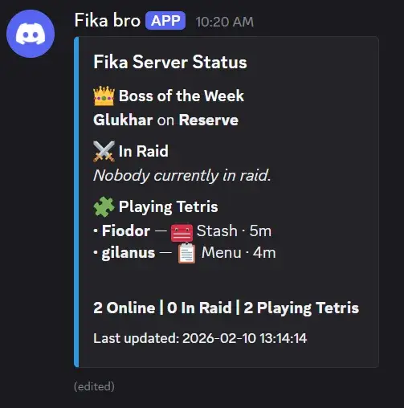

Fika Discord Presence
- Downloads
- 646
- Favourites
- 4
- Mod lists
- 6
Fika Discord Presence
Displays live Fika server status in Discord using a webhook. Shows online players, raid status, activity, and optional Weekly Boss information parsed from SPT logs (compatible with ABPS if installed).
Example

Features
- Live player list from the Fika API
- Raid / out-of-raid activity detection
- Side display (PMC / Scav) during raids.
- Activity duration tracking
- Weekly Boss detection from SPT logs
- Auto-creates and edits a single persistent Discord message
- Live config reload (no restart required for most settings)
- Extremely customizable (Icons, colors, weekly boss display, names of categories, refresh rate…)
Requirements
- Fika
- Discord webhook URL
Installation
- Place the mod folder inside your THE CITY install folder.
- Open config.json.
- Insert:
- Discord.WebhookUrl (https://support.discord.com/hc/en-us/articles/228383668-Intro-to-Webhooks)
- Fika.ApiKey (Found in SPTInstallFolder\SPT\user\mods\fika-server\assets\configs\fika.jsonc)
- LogFolderPath (X:\Your\THE CITY\Folder\SPT\user\logs\spt)

Thumbnail by agus raharjo, inverted by me.
Disclaimer:
After having thought about it for a while I’m going to retire from modding for the time being.
I’m relying way too much on AI to do most of the heavy work. Whenever I see AI art I can’t stop myself from being disgusted by it and I’ve come to feel the same way about AI mods. Hence why I’ve decided to stop modding altogether and dedicate the free time I have to learn C# and Unity.
The only thing I’ll keep updated will be the per-scope config for PiP-Disabler.
If anyone wants to maintain my mods they’re free to do so ! Although PiP-Disabler is an absolute mess and would probably need to be rewritten from the ground up to be maintainable…
Version
1.0.2
Removed RAM creep due to not disposing of objects before creating new ones + added periodic GC.
Dependencies
Version
1.0.1
Added a fallback to standard SPT weekly boss system if no ABPS line is found in the log.
Dependencies
Version
1.0.0
First release !